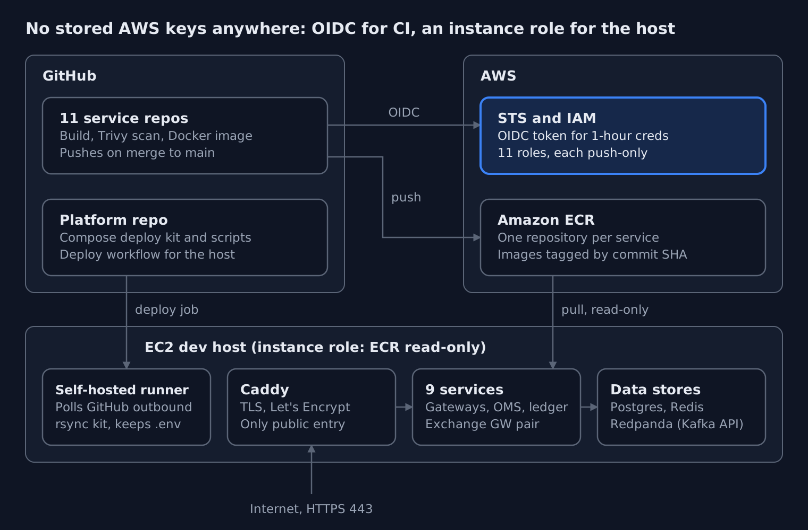

Shipping a Fintech Trading Platform on AWS
Keyless CI/CD, EC2 and Repo Governance
In about three working days, we took a fintech trading platform from "images in a registry" to a running, TLS-terminated dev environment on AWS: 11 services with keyless CI/CD, 9 services live on EC2, and 17 repositories brought under one branch policy. Not a single long-lived AWS access key was created along the way.
This post walks through the whole thing: the architecture, the decisions, the commands, and the bugs that cost us the most time. The client stays anonymous, and every account ID, IP and domain below is a placeholder.
The brief:
- What: a trading platform made of independent microservices, built as Docker images in GitHub Actions and deployed with a Docker Compose kit the dev team maintains.
- Where: AWS, one EC2 host for the dev environment, Amazon ECR as the image registry.
- Rules: no static AWS keys in GitHub or on servers, least-privilege everywhere, no SSH-driven deploys, and a branch model that keeps
mainreleasable.
If you run GitHub Actions against AWS, deploy containers to a VM, or manage more than a handful of repos, most of this transfers directly.
The platform and the starting point
The platform is event-driven: services talk over Kafka-compatible topics, keep state in Postgres, cache in Redis, and sit behind a single API edge.
| Layer | Components |
|---|---|
| Edge | Caddy (automatic TLS), API gateway, real-time WebSocket gateway |
| Trading core | Order management, exchange gateway (active/standby pair), scheduler |
| Back office | Portfolio ledger, reconciliation, identity, notification |
| Data | Postgres 16, Redis 7, Redpanda (Kafka API) |
| Delivery | GitHub Actions, Amazon ECR, self-hosted runner on the host |

CI gets one-hour credentials from STS and pushes to ECR. The host pulls with a read-only instance role, and only Caddy faces the internet.
Each service lives in its own repository and maps one-to-one to an ECR repository (<prefix>/<service>). A separate platform repo holds the Compose deployment kit: compose.yaml, env templates, a secrets bootstrap script and helper scripts for deploy, rollback and backup.
When we picked this up, the service repos already had a CI pipeline: pnpm build, Docker build, Trivy image scanning, and a push-to-ECR step guarded by an if:. What did not exist yet:
- Any way for GitHub to authenticate to AWS.
- A host to run the stack.
- A deploy path that did not involve someone SSH-ing in.
- Consistent repository settings across the org.
Part 1: Keyless CI/CD with GitHub OIDC and ECR
Every service authenticates to AWS through GitHub's OIDC provider, assuming its own push-only IAM role. No AWS keys are stored in GitHub.
The old pattern, an IAM user's access key pasted into repository secrets, gives you a credential that never expires, works from anywhere, and is usually over-permissioned. With OIDC, each workflow run gets a short-lived token from GitHub, exchanges it with AWS STS for temporary credentials, and those expire within the hour.
One role per service, push-only
We chose one IAM role per service rather than one shared CI role. A compromised workflow in one repo can then push only to its own ECR repository.
- Role:
<prefix>-<service>-github-ecr-role - Inline policy:
<prefix>-<service>-ecr-push-policy - Trust: only GitHub's OIDC provider, only that repo, only the
mainbranch, audiencests.amazonaws.com
The permission policy is the minimum ECR needs for a push:
{
"Version": "2012-10-17",
"Statement": [
{
"Effect": "Allow",
"Action": "ecr:GetAuthorizationToken",
"Resource": "*"
},
{
"Effect": "Allow",
"Action": [
"ecr:BatchCheckLayerAvailability",
"ecr:InitiateLayerUpload",
"ecr:UploadLayerPart",
"ecr:CompleteLayerUpload",
"ecr:PutImage"
],
"Resource": "arn:aws:ecr:<region>:<account-id>:repository/<prefix>/<service>"
}
]
}
GetAuthorizationToken has to be *, because it is not a repository-level action. Everything else is pinned to a single repository ARN. There is no pull, no delete and no lifecycle-policy access.
Creating 11 roles without clicking 11 times
The roles were created with a bash script run in AWS CloudShell, one service at a time. Only two variables change per run: SERVICE and REPO_ID. Before it creates anything, the script:
- Validates both policy documents as JSON with
jq. - Runs
aws accessanalyzer validate-policyon the permission policy and the trust policy. - Checks that the OIDC provider and the target ECR repository exist.
- Checks that the role does not already exist.
- Runs in
DRY_RUN=truemode first and prints exactly what it would create.
At the end it prints the links you need next: the repo's Actions variables page, its ci.yml, and the Actions tab.
The workflow side only needs permissions: id-token: write and the official credentials action:
permissions:
id-token: write
contents: read
- uses: aws-actions/configure-aws-credentials@v4
with:
role-to-assume: ${{ vars.AWS_ECR_PUSH_ROLE_ARN }}
aws-region: ${{ vars.AWS_REGION }}
We validated the full chain on one service first: role, variables, a push, and the image in ECR. Only then did we roll out to the other ten. That order mattered, because the first service is where both of the bugs below showed up.
The two bugs that taught us the most
Bug 1: AssumeRoleWithWebIdentity kept failing, and the policy was "correct"
The first run failed with Not authorized to perform sts:AssumeRoleWithWebIdentity. The trust policy matched the textbook format exactly:
"token.actions.githubusercontent.com:sub": "repo:<org>/<repo>:ref:refs/heads/main"
Two roles in the same AWS account, belonging to a different GitHub org, worked with that exact pattern. So the problem had to be in the token, not the policy.
The answer was in CloudTrail. Failed web-identity assumptions are logged with the claims GitHub actually sent:
aws cloudtrail lookup-events \
--lookup-attributes AttributeKey=EventName,AttributeValue=AssumeRoleWithWebIdentity \
--max-results 5 --query 'Events[].CloudTrailEvent' --output text | jq .
The sub claim did not look like the documentation. This GitHub org had customized its OIDC subject template to include immutable IDs:
repo:<org>@<org-id>/<repo>@<repo-id>:ref:refs/heads/main
This is a sensible hardening choice. A renamed or recreated repo can no longer inherit another repo's trust, because the numeric IDs never change. It also means every trust policy needs the org ID (the same everywhere) and the repo's own numeric ID. You can find that ID in the API response for the repo, or by searching the page source for repository_id. Once the trust condition matched the real claim, the role assumed on the first try.
Lesson: when OIDC trust fails, stop editing the policy and read the token. CloudTrail shows you exactly what AWS received.
Bug 2: A green pipeline that pushed nothing
With auth fixed, the next run went green. There was no new image in ECR.
The push steps were guarded by if: vars.AWS_ECR_PUSH_ROLE_ARN != ''. The role ARN and region had been saved as repository Secrets, not Variables. vars.* was empty, the condition was false, and GitHub skipped every push step without an error. A skipped step still counts as success.
The fix was moving AWS_REGION and AWS_ECR_PUSH_ROLE_ARN to the Variables tab. A role ARN is not a secret anyway: it is useless without a token the trust policy accepts.
Lesson: a green run is not proof of delivery. Verify the artifact (aws ecr describe-images), not the checkmark.
Part 2: The EC2 host, with no keys on it either
The host pulls images through an instance role that can only read from ECR. There is no aws configure and no credentials file on disk.
The instance
| Setting | Choice | Why |
|---|---|---|
| AMI | Ubuntu 24.04 LTS | Long support window, current Docker packages |
| Size | t3.large, with t3.xlarge as the step up |
9 services plus Postgres, Redis and Redpanda fit in 8 GB for dev |
| Disk | 50–100 GB gp3 | Images, Postgres data, Redpanda log segments |
| Network | Elastic IP, ports 80/443 open, 22 from known IPs only | Stable DNS target; SSH is for break-glass, not deploys |
| Identity | Instance profile with ECR read-only, scoped to <prefix>/* |
The host can pull, never push or delete |
Host preparation
sudo timedatectl set-timezone UTC && sudo timedatectl set-ntp true
curl -fsSL https://get.docker.com | sudo sh
sudo usermod -aG docker ubuntu
docker compose version # the kit needs >= 2.24
# AWS CLI v2
curl -s https://awscli.amazonaws.com/awscli-exe-linux-x86_64.zip -o awscliv2.zip
unzip -q awscliv2.zip && sudo ./aws/install
aws sts get-caller-identity # must show the instance role, not a user
That last line is the check that matters. If it prints an IAM user, someone left keys on the box.
The host had previously run nginx and certbot, so we removed both. The kit ships its own Caddy container, which needs ports 80 and 443 to itself and handles Let's Encrypt automatically. DNS for the API hostname was pointed at the Elastic IP before the first start, because Caddy requests the certificate on boot and a failed ACME challenge is slow to retry.
The deployment kit
The platform repo was cloned to /opt/<platform> using a read-only deploy key, not a personal token. The kit splits configuration in two:
deploy/.env: non-secret settings such as the AWS account, region, domain, ACME email and image tags.deploy/env/*.env: one file per service holding generated secrets. These files are created on the host byinit-secrets.shand never committed.
For this first dev deploy, images were pinned to commit-SHA tags, because semantic version tags did not exist yet. A SHA is immutable and maps straight back to a commit, so it is actually a good dev default.
Part 3: Deploying without SSH
A push to the platform repo deploys itself. A self-hosted GitHub Actions runner on the host syncs the kit into place and leaves the secrets untouched.
We considered SSH from a GitHub-hosted runner. That means storing a private key in GitHub and opening port 22 to GitHub's IP ranges. A self-hosted runner flips the direction: the host makes an outbound HTTPS connection to GitHub and picks up jobs, so no inbound port is needed for deploys.
The deploy workflow
The runner checks the repo out into its own _work folder. The key design point is that the checkout is not the live directory. The workflow rsyncs it into /opt/<platform> and excludes everything that lives only on the host:
jobs:
deploy:
runs-on: [self-hosted, <runner-label>]
steps:
- uses: actions/checkout@v4
- name: Sync kit to live directory
run: |
rsync -a --delete \
--exclude '.git' \
--exclude 'deploy/.env' \
--exclude 'deploy/env/*.env' \
./ /opt/<platform>/
- name: Deploy
working-directory: /opt/<platform>/deploy
run: ./scripts/deploy.sh
Without those excludes, --delete would wipe every generated secret on the first run.
Two runner gotchas worth knowing
runs-onmatches labels, not the runner's name. Our workflow asked for one label while the runner was registered with another. The job sat at "Waiting for a runner to pick up this job" with no error at all.- Removing a runner in the GitHub UI deletes its local registration. The service log said the runner no longer existed on the server and cleaned up its config. Re-registering needs a fresh token, and those expire after about an hour. The token's scope (repo or org) must also match the
--urlyou pass, or you get a 404.
The service log is the first place to look whenever a runner misbehaves: sudo ./svc.sh status, then the newest _diag/Runner_*.log.
Part 4: The problems between "docker compose up" and "healthy"
None of these are exotic, but each one costs an hour if you have not seen it before.
Least-privilege ECR looked broken when it wasn't
On the host, aws ecr describe-repositories returned AccessDenied, even though pulls worked. Without --repository-names, that call is evaluated against repository/*, and our policy correctly allowed only repository/<prefix>/*. To test access to a specific repo, use a call scoped to that repo:
aws ecr describe-images --repository-name <prefix>/<service> \
--query 'sort_by(imageDetails,&imagePushedAt)[-1].imageTags' --output text
The temptation is to widen the policy until the error goes away. Don't. Change the test instead.
Docker Hub rate limits on third-party images
Pulling the Redpanda image anonymously hit HTTP 429. We pulled it once from Docker Hub and re-tagged it locally to the exact reference the Compose file expected. The longer-term fix is to mirror third-party images into ECR with a pull-through cache, so the host only ever talks to one registry.
Layering a dev override the way the kit expects
Dev needed an extra service: a simulator for the external exchange API. The standard COMPOSE_FILE variable did nothing, because the kit's common.sh passes -f compose.yaml explicitly. Reading the script showed it already supported an optional override variable that appends a second -f compose.dev.yaml. Reading the wrapper first would have saved a round of trial and error.
restart does not reload env files
After editing a service's env/*.env, docker compose restart <svc> restarts the same container with the old environment. Compose only reads env files when it creates a container:
docker compose up -d --force-recreate --no-deps <service>
Two credentials, not one
The exchange gateway connects to the external exchange over both REST and a WebSocket feed. It authenticated over REST and then failed on the WebSocket with an auth error, again and again. The exchange issues separate logins for the two channels, and we had reused the REST one. Once the WebSocket credentials came through, both channels connected. One gateway instance took the active session and the second held as a hot standby, as designed.
Small things that save time on a Compose host
- Run Compose from the directory that holds the production
compose.yaml. The repo-rootdocker-compose.ymlwas for local development, and using it on the server starts the wrong stack. - Load
.envinto your shell withset -a; . ./.env; set +aso variables like the API domain are available in ad-hoc commands. docker compose exec -Tis for one-shot commands. Leave out-Tfor an interactivepsql, or the session looks frozen with no prompt.
Part 5: When secrets leaked, we rotated everything
Midway through the deploy, real generated secrets were pasted into a chat tool while we were debugging: a JWT signing key, a TOTP encryption key and database passwords. We treated all of it as compromised and regenerated every secret, not just the ones we could see.
It was a dev environment with no real users. The temptation is to shrug it off. We didn't, for two reasons. First, habits are set in dev. Second, a JWT signing key is a token-minting key: anyone holding it can forge sessions for any account.
Because the kit generates secrets instead of having people type them, rotation took minutes:
cd /opt/<platform>/deploy
rm env/*.env
./scripts/init-secrets.sh # fresh random values for every service
docker compose up -d --force-recreate
There was one catch. Postgres only applies its password environment variables when it initialises an empty data directory. On an existing volume, the database keeps the old passwords. So when you rotate, also update the database role passwords with ALTER ROLE, or reset the volume if the data is disposable. Otherwise the services come up with new passwords against a database that still expects the old ones.
Lesson: make secrets generated, not typed, and keep rotation to a single command. Then rotating after an exposure is quick, and you are never tempted to skip it.
Part 6: Repo governance across 17 repositories
The pipeline is only as trustworthy as the branches it builds from. We standardised all 17 repositories in the org on one branch model and one set of merge rules.
The branch model
devis the default branch. Day-to-day pull requests target it.mainonly changes through arelease/<x.y>orhotfix/<topic>pull request, merged with a merge commit, so each release is visible as a single point in history.- Feature pull requests into
devcan be squash-merged to keep its history readable.
The repository settings that enforce it
| Setting | Value | Why |
|---|---|---|
| Default branch | dev |
New PRs and clones start where work happens |
| Allow merge commits | On | Required for release and hotfix merges into main |
| Allow squash merging | On | Clean history for feature work |
| Allow rebase merging | Off | Rebasing rewrites commit SHAs, which breaks traceability for SHA-tagged images |
| Automatically delete head branches | On | Merged branches don't pile up |
The dev branch has to exist in a repo before you can make it the default. After the switch, scheduled workflows (on: schedule) run from the default branch's copy of the workflow file, so check any repo that has cron jobs. Teammates refresh their clones with git remote set-head origin -a.
One command checks the result across the whole org:
gh repo list <org> --limit 100 --json name -q '.[].name' | while read r; do
gh api "repos/<org>/$r" -q '"\(.name): default=\(.default_branch) squash=\(.allow_squash_merge) merge=\(.allow_merge_commit) rebase=\(.allow_rebase_merge) autodelete=\(.delete_branch_on_merge)"'
done
Recovering main after it was bypassed
During the rollout, a series of direct commits landed on the platform repo's main, outside the release process. They removed CI workflow files the deploy depended on. Because main had a clear known-good commit and the bad commits were all after it, we reset the branch:
git fetch origin
git reset --hard <last-known-good-sha>
git push --force origin main
Rewriting a shared branch is a deliberate, last-resort choice. Before you do it, confirm that the commit range you are discarding contains only the bad commits. Consider pushing a backup branch first. Tell everyone who may have pulled. Afterwards, protect main with a ruleset that blocks direct pushes and force pushes, so the next fix can be a reviewed pull request instead.
Results
After about three working days, every service was healthy behind a valid TLS certificate, both exchange channels were connected, and the first admin account was created on the live stack.
| Outcome | Result |
|---|---|
| Services with keyless CI/CD to ECR | 11 |
| IAM roles, each push-only to one repository | 11 |
| Long-lived AWS access keys created | 0, in CI and on the host |
| Services running on the dev host | 9, plus Postgres, Redis, Redpanda and Caddy |
| Repositories on one branch and merge policy | 17 |
| Inbound ports needed for deploys | 0 (the runner connects outbound) |
| Deploy trigger | One git push; live in a few minutes, with no SSH |
| Secret rotation after exposure | All service secrets, regenerated with one script |
| Time from first role to healthy stack | About 3 working days |
Still open at the time of writing: scheduled database backups (being configured last), semantic version tags in place of commit SHAs, and an ECR pull-through cache for third-party images.
What we'd tell anyone doing this next
- Read the token, not the docs. When OIDC trust fails, CloudTrail shows the exact
subclaim AWS received. Organizations can customise it, and many do. - Green is not delivered. Check the artifact in the registry, not the workflow's status. A skipped step counts as a success.
- Variables are config, Secrets are secrets. A role ARN belongs in
vars. A wrong choice can silently disable whole parts of a pipeline. - Scope the role to the repo, then scope your tests the same way. When a least-privilege policy "fails" an account-wide API call, it is doing its job.
- Let the host pull and never push. An instance role with read-only ECR access means a compromised host cannot poison the registry.
- Separate the checkout from the live directory. Rsync with explicit excludes, so a deploy can never delete the secrets it depends on.
- Make rotation boring. If regenerating every secret is one command, you will actually do it when it matters.
- Read the wrapper scripts. A kit's own helper scripts often ignore the standard environment variables and expose their own.
- Governance is part of delivery. Default branches, merge strategies and protected
maindecide what your pipeline ships.
What's next
The dev environment is the template for staging. The next steps are:
- Move the host and its IAM into Terraform, so staging is a variable change rather than a rebuild.
- Replace commit-SHA tags with semantic versions cut from
release/*branches. - Add an ECR pull-through cache for third-party images.
- Ship the scheduled Postgres backups to S3, and test a restore.
- Add monitoring and alerting before real users arrive.